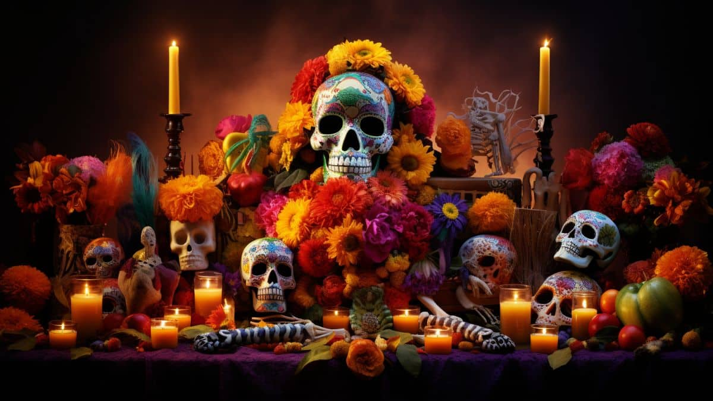

Una celebración de vida y recuerdos
El Día de Muertos es una de las festividades más importantes de México, donde honramos la memoria de nuestros seres queridos que han partido. Esta celebración llena de color, música y sabor, nos recuerda que la muerte es solo una etapa más en el ciclo de la vida.
Los altares son el corazón de la celebración del Día de Muertos. Se construyen en los hogares y en lugares públicos, y se decoran con elementos simbólicos como:
"El altar incluye niveles, que representan el cielo y la tierra, y las ofrendas muestran el amor y respeto hacia los seres queridos."
Las calaveras literarias son poemas humorísticos que se escriben para hacer burla de la muerte. Estas pequeñas rimas jocosas incluyen:
"Es una tradición que simboliza la relación única de los mexicanos con la muerte, una actitud de aceptación y celebración."
El pan de muerto es un elemento culinario central de esta festividad. Su diseño es representativo y se elabora con:
"Este pan es compartido entre los familiares y amigos, y suele colocarse también en los altares como ofrenda."
El desfile de Catrinas es un evento colorido donde miles de personas se disfrazan como "La Catrina", el famoso personaje creado por José Guadalupe Posada.
"Este desfile representa la aceptación de la muerte como parte de la vida, y cada año atrae a miles de turistas y locales."